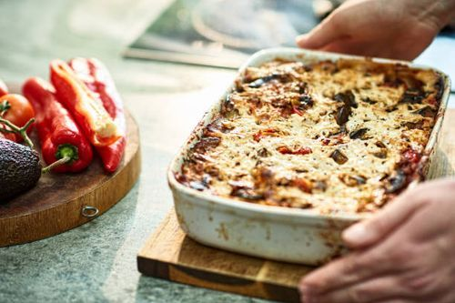

Home
Lasagna

Description
Lasagna is a hearty Italian classic made by layering sheets of pasta with rich meat sauce,
creamy béchamel, and melted cheese. Baked to golden perfection, this dish is comforting,
flavorful, and perfect for both family dinners and special occasions
Ingreidients
- 12 lasagna plates
- 500g ground beef
- 1 onion
- 2 garlic cloves
- 800g crushed tomato
- 2 tbs tomato paste
- 1 tablesppon dried basil
- salt and pepper
- 250g ricoota chees
- 200g mozarella cheese
- 50g grated Parmesan cheese
- 1 egg
- olive oil
- cook onion, garlic and ground beef
- add tomatoes, paste , herbs, salt, pepper. simmer
- boil lasagna noodels
- mix ricotta, egg , salt,
- preheat oven to 180 degrees
- layer with sauce noodles, ricotta, cheese then repeat
- bake 25 min covered + 15 min uncovered
- rest 10-15 min before serving